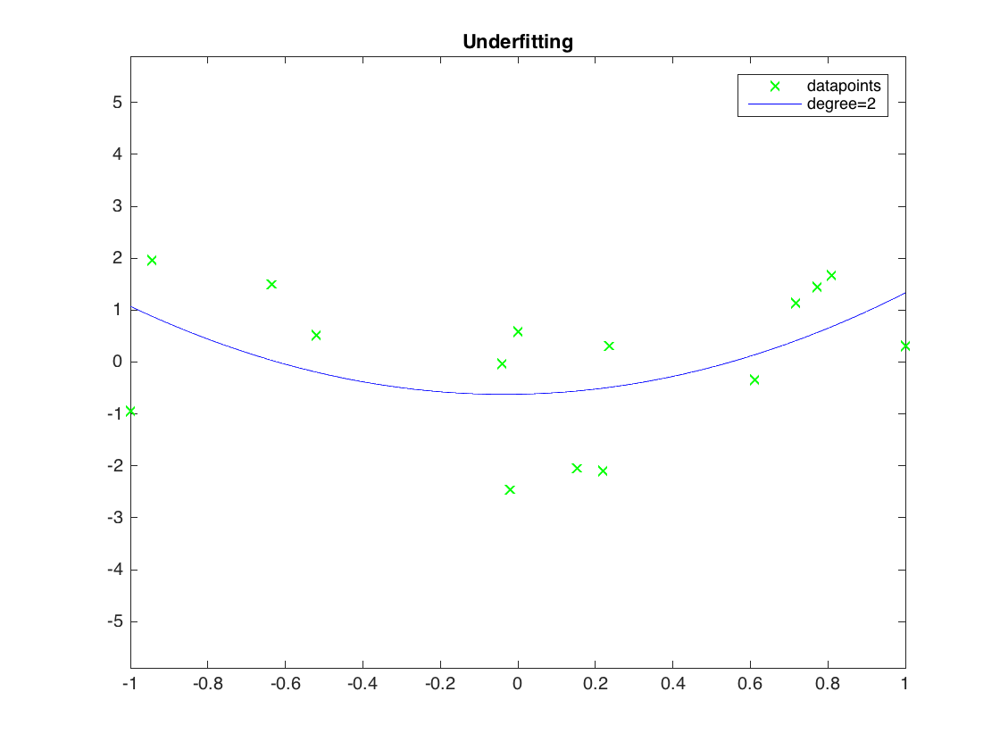
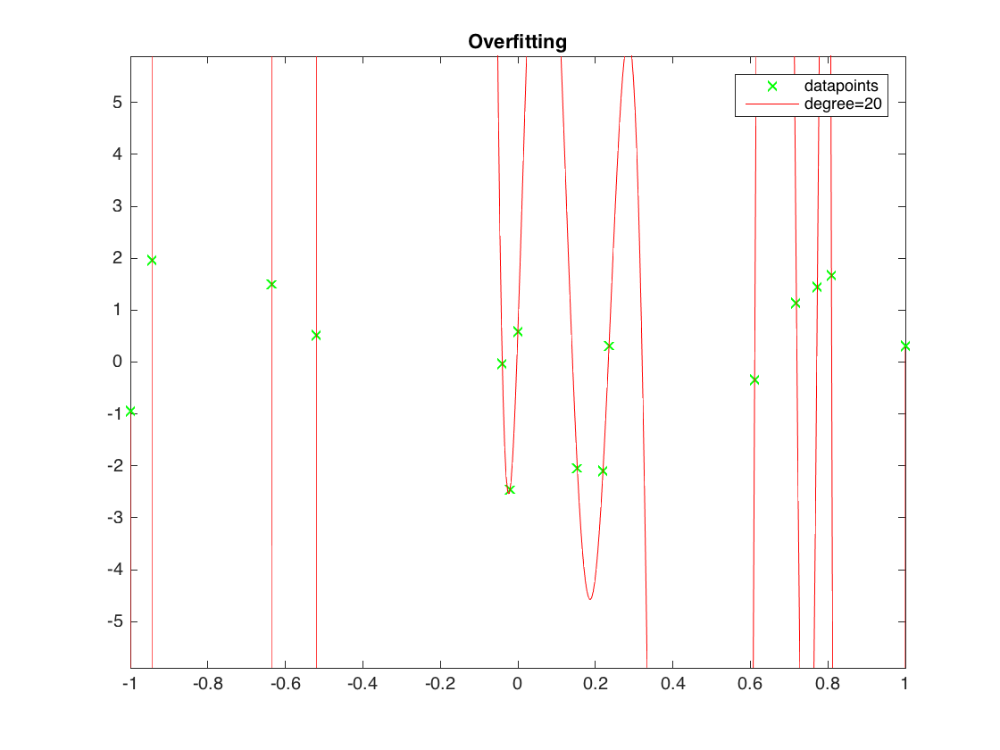

Contents
clear all; clc;
Empirical risk minimization with the square loss
and a hypothesis class of univariate polynomials
generate the data
m = 15;
x = [-1;sort(2*rand(m-2,1)-1);1];
y = abs(x) + randn(m,1);
underfitting with polynomials of low degree
deg = 2;
p_underfit = polyfit(x,y,deg);
grid = linspace(-1,1,500)';
figure(1);
plot(x,y,'gx',grid,polyval(p_underfit,grid),'b-');
legend('datapoints',strcat('degree=',num2str(deg)));
title('Underfitting')
axis([-1 1 -3*max(y) 3*max(y)])

overfitting with polynomials of high degree
deg = 20;
p_overfit = polyfit(x,y,deg);
grid = linspace(-1,1,500)';
figure(2);
plot(x,y,'gx',grid,polyval(p_overfit,grid),'r-');
legend('datapoints',strcat('degree=',num2str(deg)));
title('Overfitting')
axis([-1 1 -3*max(y) 3*max(y)])
Warning: Polynomial is not unique; degree >= number of data points.
